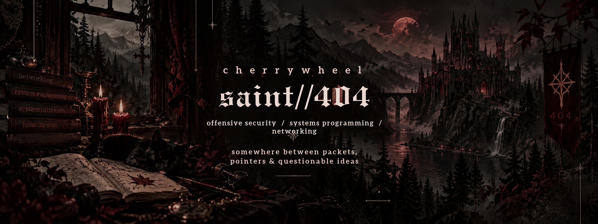
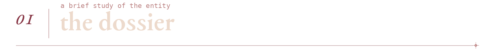
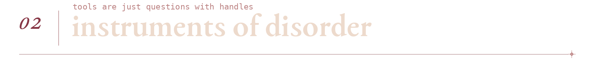
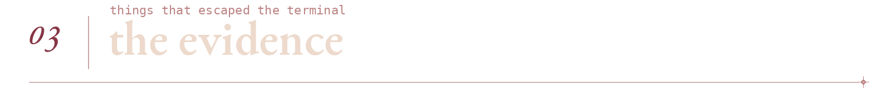
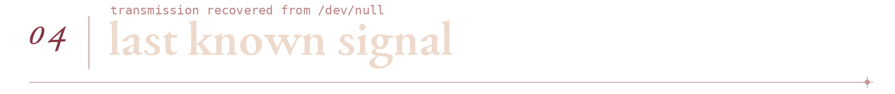

red team ✦ systems programming ✦ network engineering

i like my software understandable, my protocols documented and my bugs deeply inconvenient
somewhere between packet captures and a debugger at 3 am, i got a little too interested in the things software was never supposed to do
i write code, study failure modes and follow the interesting bits all the way down to the metal
the short version: offensive security, low-level programming, networks and an unreasonable amount of curiosity
alias cherrywheel role red team / software engineer habitat linux terminals and packet captures status 404: acceptable assumptions not found

| languages | c c++ python erlang |
| environment | linux shell git |
| networking | tcp/ip routing wireguard |
| automation | ansible |
| obsessions | red teaming reverse engineering protocol internals |
not a stack of badges, just the instruments currently on the workbench

01 / NETWORK TOOLING
speedtest++a c++ speed test client with multiple backends, result history and output made for both humans and scripts c++ · networking
|
02 / CROSS-PLATFORM CHAOS
cn towera text adventure rewritten in c and built for a frankly unnecessary number of architectures c · systems
|
03 / INFRASTRUCTURE EXPERIMENTS
cisco ios xe automationan ansible example for network device configuration and ios xe workflows, experimental by design and not intended for production use ansible · network automation
|
|

$ whoami
cherrywheel
$ cat /etc/motd
curiosity is not a vulnerability
but it makes finding them easier
$ inspect --assumptions
0 trusted, 17 pending review
$ exit
permission denied: unfinished business
classified / open at your own risk
the cat has seen the stack trace and refuses to testify